Memory Game Android
Created with: Kotlin.
This is a Android game created in Android Studios using Kotlin. It's a memory-game where the player has to pair pictures to advance, the point is to clear a level as fast as you can.
Your best score is saved and showcased in the menu. The game contains 3 different levels, easy, medium and hard.
Link to Github: https://github.com/ollin99/Memory_game_android


Antiphishing Game
Created with: HTML, CSS & JS.
This game is about teaching the players to watch out for different suspect parts of emails that might make it a phishing attempt.
We made it so the player has to beat the first level to advance to next level and so on, it should make the player feel some kind of progression and development.
The plan was to have a final level were the player would get to show everything that it has learned.
The gameplay consists of highlighting the parts that might be suspect. The player has to find all the correct answers to unlock the next level.
The game gets progressively harder each new level.
Link to Github: https://github.com/ollin99/Antiphishing_email_game


Tic Tac Toe
Created with: HTML, CSS, JS & PHP
This game is a simple Tic Tac Toe game, but created mostly with PHP and a database. The players can create player-profiles, that is saved in the database.
Every game is saved so it can later be looked at, with a scoreboard.
Link to Github: https://github.com/ollin99/tic_tac_toe
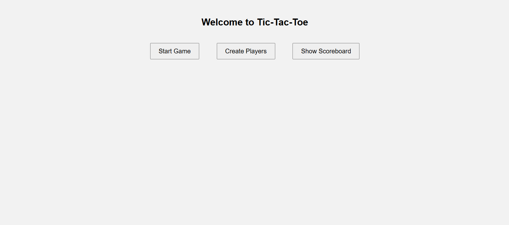
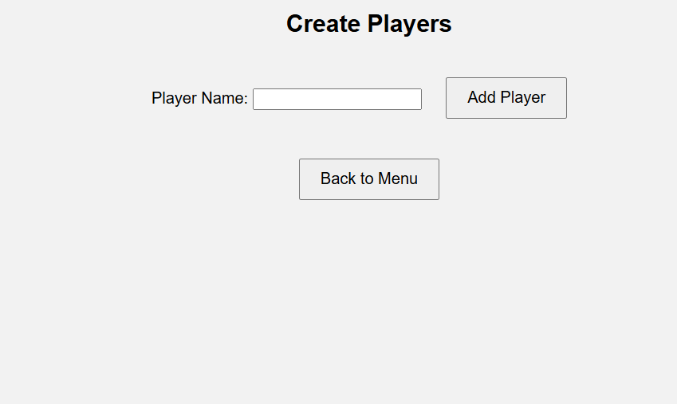
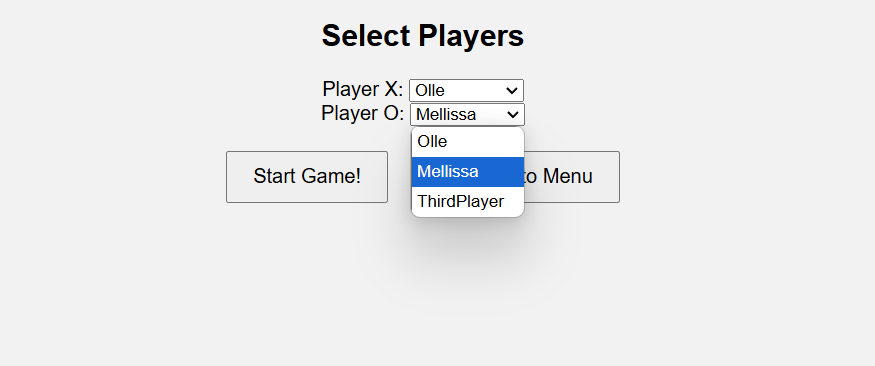
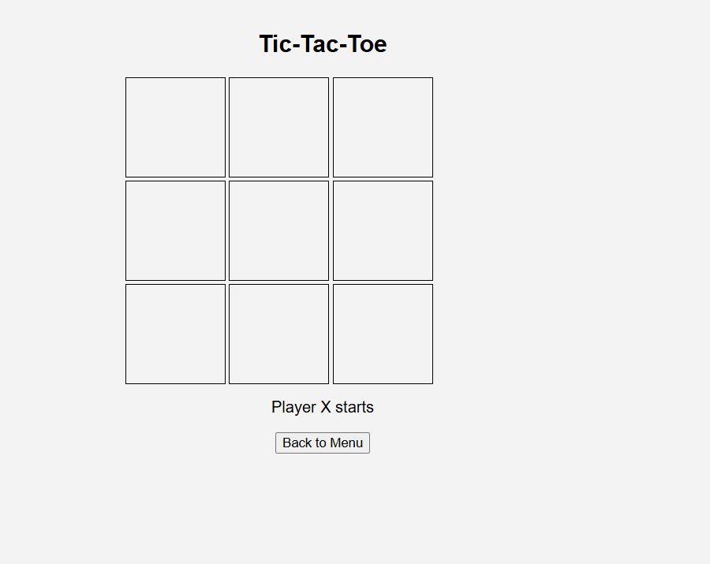
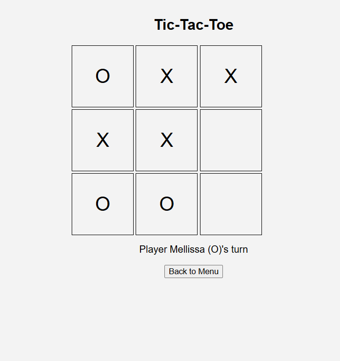
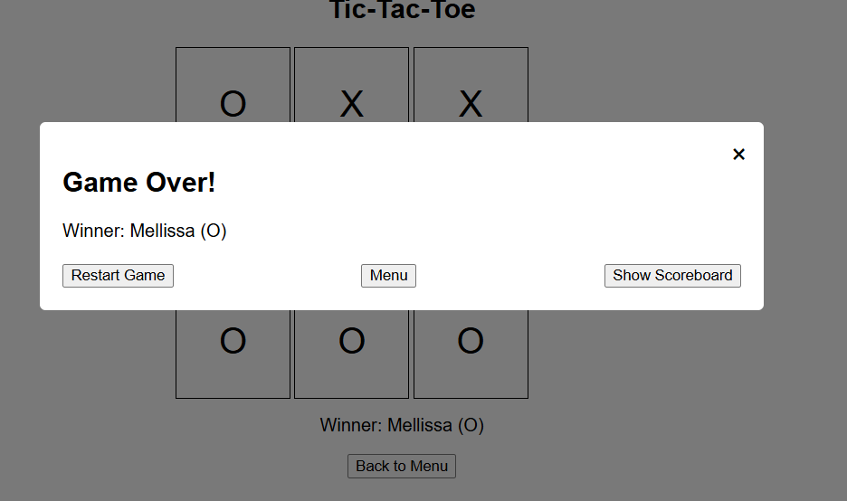
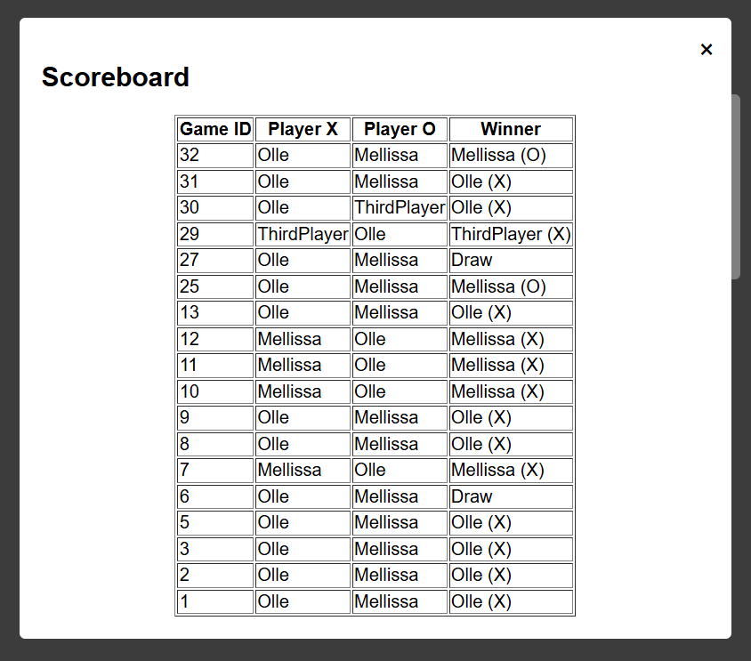
Kanban-board
Created with: HTML, CSS, JS
This website is made to create and keep track of different tasks. There is three columns; To Do, In Progress and Done.
A big part of this project was focusing on getting a responsive layout. So the view for smaller screens is different compared to larger screens.
I also made it possible to save the state localy, so everytime you open it up, it should be in the same state.
You can type in the owner of the tasks, move them between columns and delete them.
Link to Github: https://github.com/ollin99/kanban_board
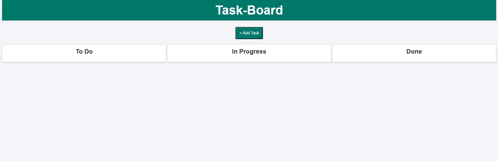
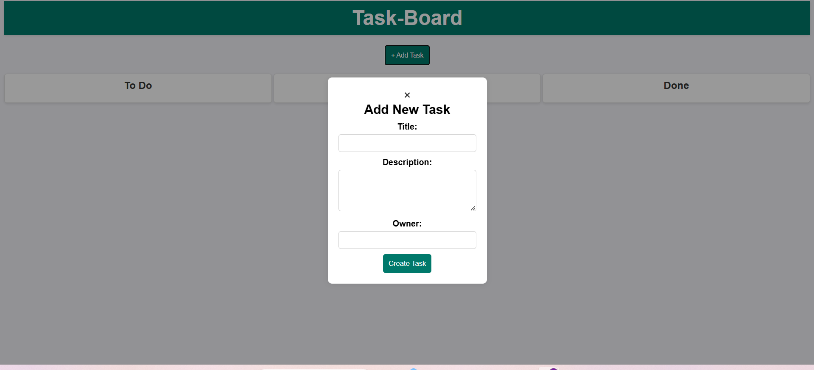
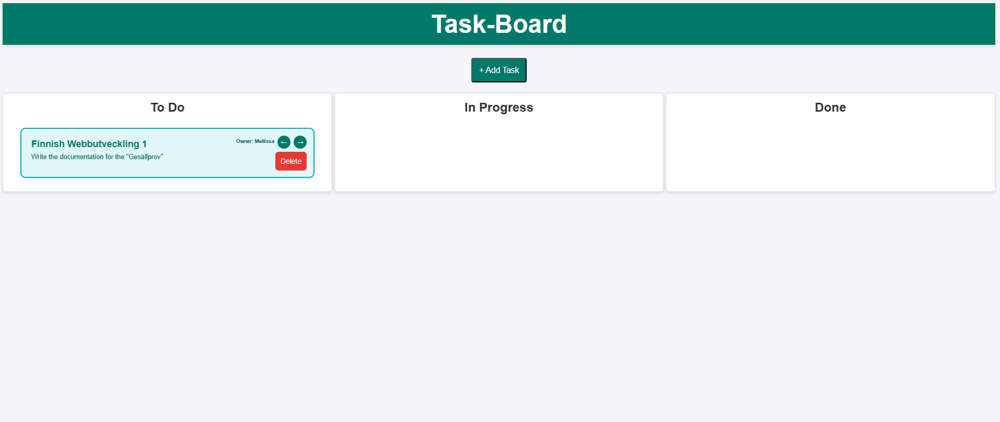
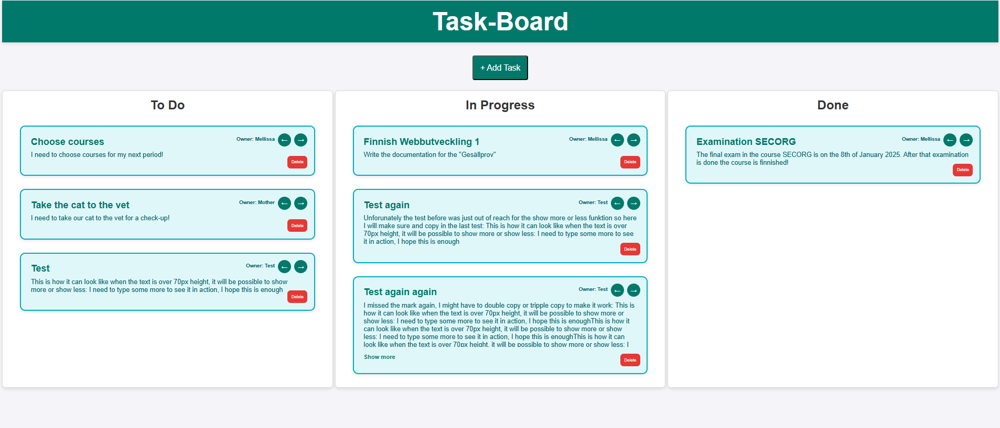
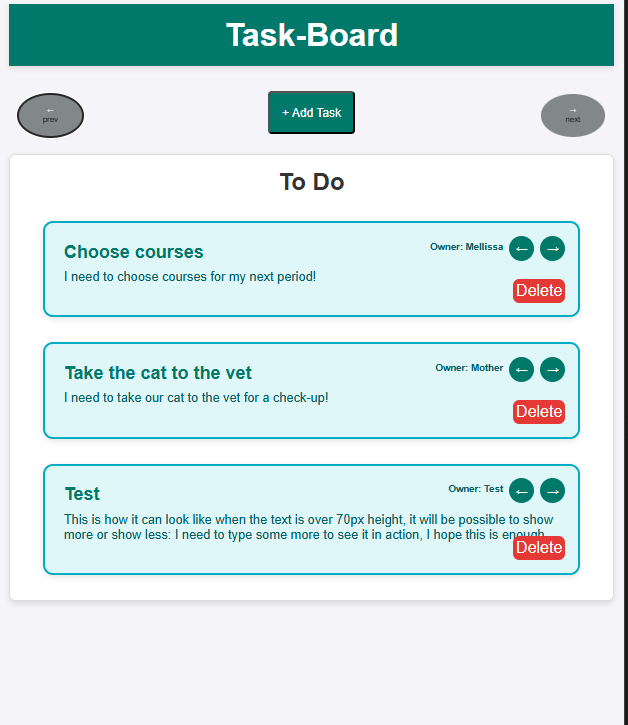
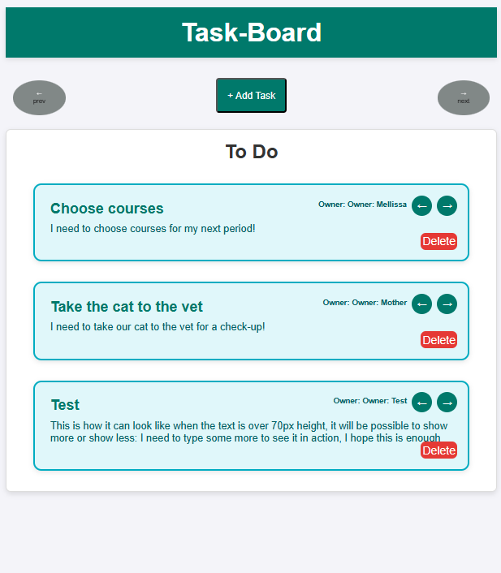
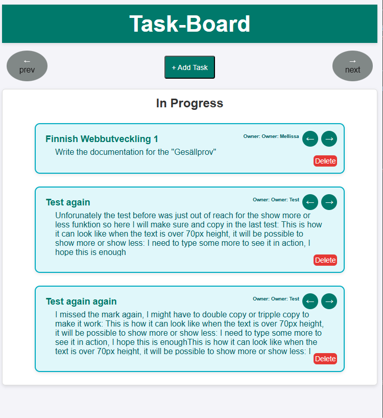